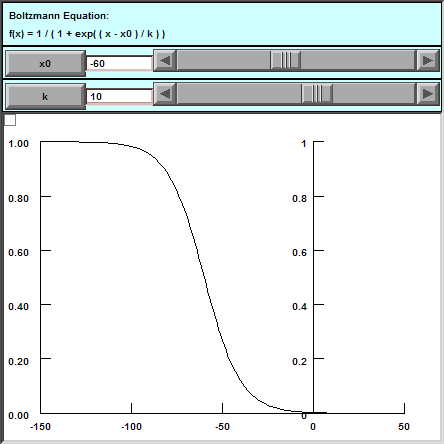
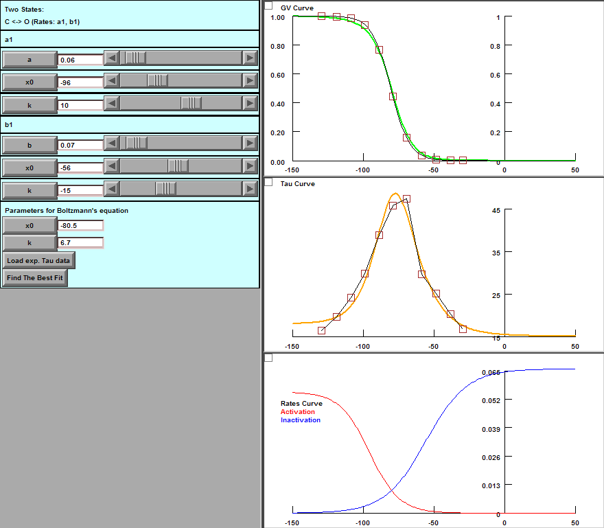

NEURON Tutorial #12
Goals: Kinetic scheme (C <-> O) - Find parameters for Ih
Specific Airms:
Code for plotting Boltzmann equation.
Code for plotting GV curve and Tau-V curve based on kinetic scheme (C <-> O).
Code to import experimental data.
Code to find the best fit.
Steps:
Double-click Main.hoc.
Click "Boltzmann" button to go to Boltzmann equation mode.
Adjust "x0" and "k" to see the effects.
Click "Two states (C <-> O)" button to activate this mode.
Adjuct respective parameters to see their effects.
Click "Load exp. Tau data" to load experimental data.
Click "Find The Best Fit" to find the best fit.
Downloads:
Main.hoc
- Program start here.
Boltzmann.hoc
- For plotting Boltzmann equation.
CO.hoc
- Base on the kinetic scheme, plot the GV curve and the Tau-V curve, import experimental data, and find the best fit.
MageeTau.dat
- Experimental data deduced from Jeff Magee's paper (1998).
12.zip
- Contains everything.
Plot Boltzmann's euqation

Find The Best Fit for The Experimental Data

The Best Fit:
a1
a = 0.0553252
v0 = -95.3764
k = 10.4901
b1
a = 0.065855
v0 = -55.6544
k = -14.5515